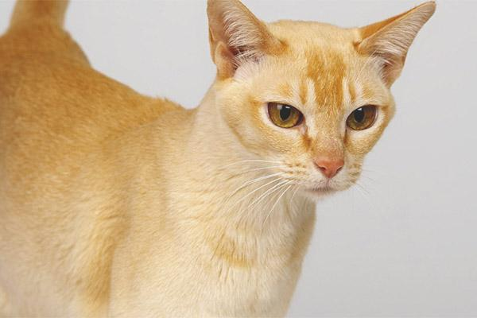

es un gato asiático que proviene de una raza natural de Sri Lanka, localizado en el sureste de India. El comienzo de estos gatos se remonta al año 1984, cuando un doctor italiano llamado Paolo Pellegatta encontró estos gatos en dicha zona y se encandiló con las marcas tabby que tienen en su cabeza, cuello, patas y cola. Fue entonces cuando se llevó varios ejemplares a su casa de Milán, en Italia, para comenzar un programa de cría.

Es un felino mediano, con una altura de 25-35 cm y un peso de 3-5 kg en las hembras y de 4-6 kg en los machos. Su cuerpo tiene forma semi-cobby, es decir, tiene un cuerpo compacto y robusto, con una cabeza redonda y ancha. Tienen unos huesos finos pero una potente musculatura. La cola se va afinando según llega a la punta y las patas delanteras son algo más cortas que las traseras.
La cabeza, pequeña en relación al resto del cuerpo, es redondeada, con mejillas prominentes, una nariz sin depresión naso-frontal, unas orejas grandes y con puntas redondeadas de color más claro que el resto del cuerpo, una frente plana, un mentón y mandíbula fuertes y unos ojos grandes de color a juego con el manto, generalmente verdes o amarillos, y de forma almendrada.

El patrón de su manto, y es que sigue un patrón tabby en zonas como la frente, la cola, las patas y el lomo. La punta de la cola es de un color algo más oscuro que el resto del pelaje, que puede ser de los siguientes colores:
Ceniza
Golden (oro)
Negro
Rojo
Tortuga
Azul

Tranquilo, afectuoso e independiente. Es algo tímido con los extraños, pero muy cariñoso con los suyos y adora estar en casa con sus cuidadores, aunque no es demasiado dependiente. Además, se lleva muy bien con los niños y con otros animales y se adapta bien a la vida dentro de un piso pequeño, pero también es fanático de los exteriores. También es uno gato activo y juguetón, que se mantiene siempre en alerta y en forma.

Apenas pierden pelo ni se forman nudos en su pelaje, por lo que un par de cepillados semanales es suficiente. Sin embargo, algunas enfermedades pueden predisponer a que estos gatos ingieran más pelo del debido y su sistema de eliminación digestiva del mismo no sea tan eficiente, por lo que no debemos olvidar esta rutina de cepillado, incluso en gatos de pelo corto como el ceilán, para prevenir las bolas de pelo.
Las grandes orejas de este gato deben ser higienizadas para prevenir otitis, así como los dientes para prevenir y detectar otras enfermedades como la gingivoestomatitis crónica felina, la gingivitis, la enfermedad periodontal, las fracturas, infecciones o heridas. Los ojos también deben ser limpiados de secreciones y suciedad para prevenir infecciones.
Dado que son gatos activos y juguetones, es fundamental garantizar un correcto enriquecimiento ambiental, donde dispongan de rascadores con varias alturas, zona de descanso, uno o más areneros (dependiendo de si hay más gatos en el hogar), juguetes variados, etc. Así mismo, es importante dedicar un rato al día para jugar, ya que, recordemos, son gatos que adoran pasar tiempo con sus compañeros humanos.
Debido a la naturaleza de la especie y a la musculatura desarrollada de la raza, esto gatos deben seguir una dieta con un alto porcentaje de proteína de origen animal para el mantenimiento de los músculos, la obtención de los nutrientes esenciales y la preservación de su salud.
Esperanza de vida de 14-16 años. Es un gato que goza de buena salud y no se le conoce de momento ninguna enfermedad asociada a la raza. Sin embargo, como cualquier gato, puede estar predispuesto a sufrir cualquier enfermedad infecciosa y parasitaria común en esta especie, por lo que las pautas de vacunación frente a enfermedades como la rinotraqueítis, la calicivirosis, la leucemia y la rabia.